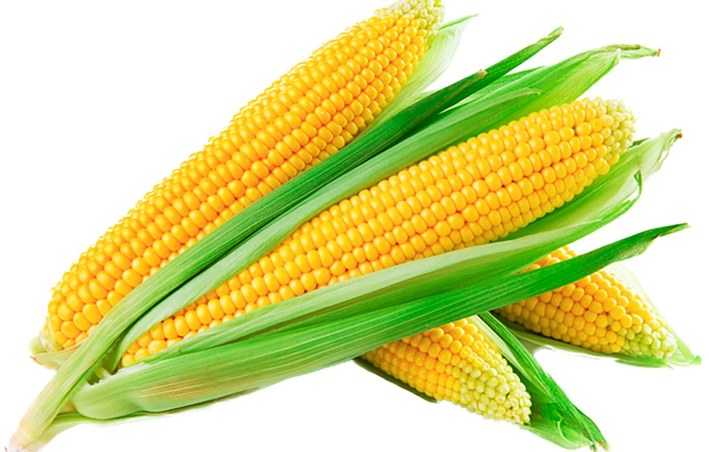
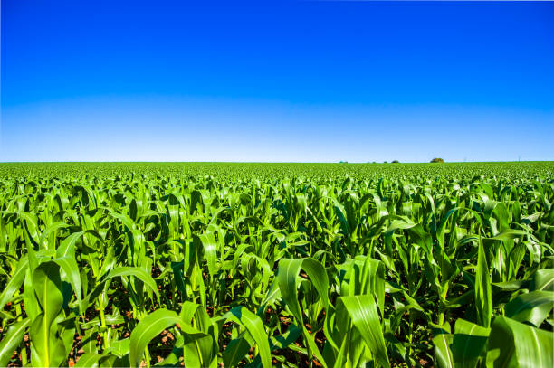

Introduction to Maize

Maize, also known as corn, is one of the most widely grown crops in the world. Originally domesticated in Mexico, maize has become a staple food in many cultures, used in a variety of forms from cornmeal to popcorn.
Health Benefits
- Rich in Nutrients: Maize is a good source of vitamins A, B, E, and many minerals including iron and magnesium.
- Energy Booster: It is high in carbohydrates, providing energy for daily activities.
- Supports Eye Health: The high levels of beta-carotene in maize help maintain good vision.
- Promotes Digestion: The fiber in maize aids in digestive health and helps prevent constipation.
How to Grow Maize
Growing maize is relatively simple and rewarding. Here are some basic steps:
- Climate: Maize grows best in warm weather with plenty of sunlight.
- Soil: Use well-draining soil that is rich in organic matter.
- Watering: Water maize regularly, especially during the flowering and ear development stages.
- Fertilizing: Apply a balanced fertilizer to ensure healthy growth.
- Harvesting: Harvest maize when the kernels are fully developed and the husks are dry.
Delicious Maize Recipes
Maize can be used in a variety of dishes. Here are a few recipes to try:
- Cornbread: A classic dish made with cornmeal, perfect as a side for soups and stews.
- Grilled Corn: Simple and delicious, grilled corn on the cob is a summer favorite.
- Corn Chowder: A creamy soup made with sweet corn, potatoes, and bacon.
Fun Facts About Maize
- Maize was first domesticated over 9,000 years ago in what is now Mexico.
- There are more than 50 varieties of maize, each with unique colors and flavors.
- Maize is used in many products, including ethanol, corn syrup, and biodegradable plastics.
- The word "maize" comes from the Taino word "mahiz," which means "source of life."